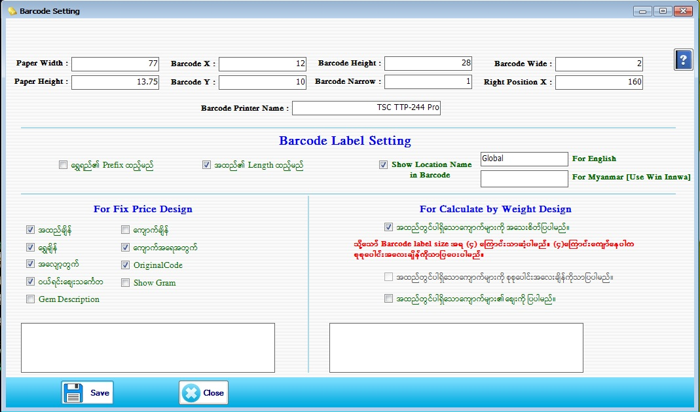

Barcode Setting Setup

- System Utilities အောက်မှ Barcode Setting Form ကိုဖွင့်ပါ။
- Paper Width, Paper Height, Barcode X, Barcode Y, Barcode Height, Barcode Narrow, Barcode Wide၊ Right Position X နှင့် Barcode Printer Name ဖြည့်စွက်ပါ။
- Barcode တွင် ကျောက်ချိန်ကိုထည့်လိုပါက ကျောက်ချိန်၏ check box ကို အမှန်ခြစ်ခြစ်ပေးပါ။ ကျောက်ဈေးပါ ထည့်မည်ဆိုပါက ကျောက်ဈေး၏ check box ကို အမှန်ခြစ်ခြစ်ပေးပါ။ မှတ်ချက်- ကျောက်ဈေး သက်သက် ထည့်ခွင့်မပေးပါ။ ကျောက်ချိန်၏ check box ကို အမှန်ခြစ်ခြစ် ထားမှသာ Barcode တွင်ကျောက်ဈေးထည့် နိုင် မည်ဖြစ်သည်။
- Barcode ထုတ်ရာတွင် ဆိုင်နာမည်တပ်ချင်ပါက Show Location Name ၏ check box ကို အမှန်ခြစ်ခြစ်ပေးပါ။ ဆိုင်နာမည် မထည့်လိုပါက အမှန်ခြစ်ကို ဖြုတ်ပေးရပါမည်။
- Barcode တွင် မိမိ ကြည့်ချင်သော Data များကို Check Box ကို on ပြီး Barcode တွင် ပြနိုင်ပါသည်။
- Data များဖြည့်စွက်ပြီးပါက Save Button ကိုနှိပ်ပါ။ ပြန်လည်ပြင်ဆင်လိုပါက ပြင်ဆင်ပြီး Update Button ကိုနှိပ်ပါ။
- Barcode Setting Form ကို အသုံးပြုပြီးပါက Close Button ကိုနှိပ်ပြီး ပိတ်နိုင်ပါသည်။